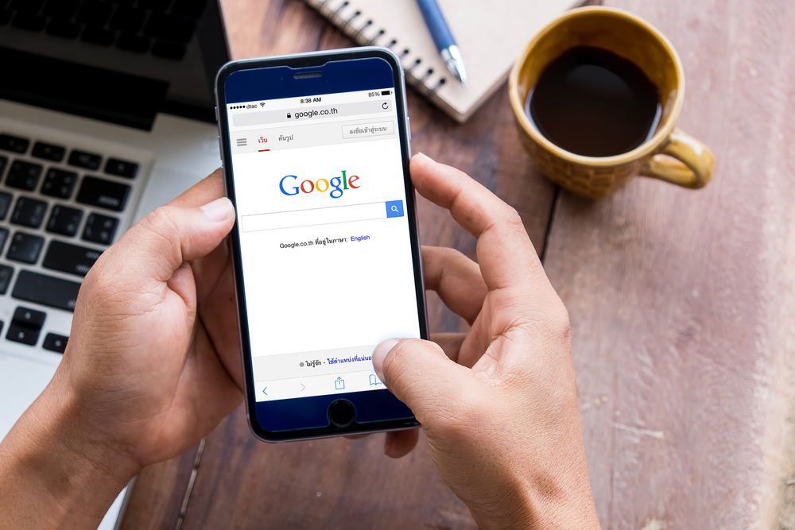
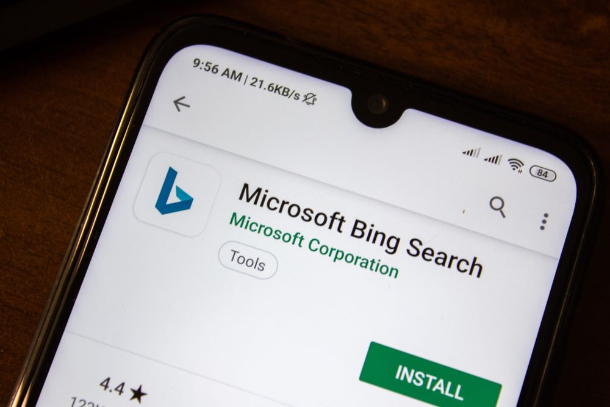

<!DOCTYPE html PUBLIC "-//W3C//DTD XHTML 1.0 Transitional//EN" "http://www.w3.org/TR/xhtml1/DTD/xhtml1-transitional.dtd"><html xmlns="http://www.w3.org/1999/xhtml"><head><meta http-equiv="content-type" content="text/html;charset=UTF-8">

<meta charset="UTF-8">
<meta http-equiv="Content-Type" content="text/html; charset=utf-8">
<meta http-equiv="X-UA-Compatible" content="IE=edge,chrome=1">
<meta name="viewport" content="width=device-width, initial-scale=1.0, maximum-scale=1.0, user-scalable=no">
<meta name="google-site-verification" content="MaU7baWWrEjrqG8OsqSctQTtkQ6ujhstreyK1d5gXkc">
<meta name="ahrefs-site-verification" content="12087e3ea5805ca83cac9aab62259e4f861670b2e94b42db700de7744028f4d4">
<meta name="yandex-verification" content="55a21d82a563a57b">
<meta name="twitter:card" value="summary">
<meta property="og:locale" content="en_US">
<meta property="og:title" content="Webzool | Winning Digital Solutions">
<meta property="og:description" content="Webzool is the #1 SEO company in Los Angeles.We have been providing SEO services for Los Angeles companies.">
<meta property="og:type" content="website">
<meta property="og:url" content="https://www.webzool.io/">
<meta property="og:site_name" content="Webzool Digital Agency">
<meta property="og:image" content="../static/images/og-image-01.png">
<title>How to do mobile SEO in 2019: 7-step optimization guide</title>
<meta name="description" content="We want to mention the next essential part of mobile SEO which is about user experience. While applying the SEO strategies for mobile devices, you should always think about your audience.">
<link rel="icon" type="image/png" href="../static/images/favicon.ico">
<link rel="stylesheet" href="../../stackpath.bootstrapcdn.com/bootstrap/4.1.3/css/bootstrap.min.css" crossorigin="anonymous">
<link rel="stylesheet" type="text/css" href="../static/css/slick.css">
<link rel="stylesheet" type="text/css" href="../static/css/slick-theme.css">
<link rel="stylesheet" type="text/css" href="../static/css/main.css" media="all">

<script src="../../www.googletagmanager.com/gtag/js" type="011559cf24e1cad65c26f821-text/javascript"></script>

<script type="011559cf24e1cad65c26f821-text/javascript">
		! function (f, b, e, v, n, t, s) {
			if (f.fbq) return;
			n = f.fbq = function () {
				n.callMethod ?
					n.callMethod.apply(n, arguments) : n.queue.push(arguments)
			};
			if (!f._fbq) f._fbq = n;
			n.push = n;
			n.loaded = !0;
			n.version = '2.0';
			n.queue = [];
			t = b.createElement(e);
			t.async = !0;
			t.src = v;
			s = b.getElementsByTagName(e)[0];
			s.parentNode.insertBefore(t, s)
		}(window, document, 'script',
			'https://connect.facebook.net/en_US/fbevents.js');
		fbq('init', '410331106460614');
		fbq('track', 'PageView');
	</script>
<noscript></noscript>


<script src="../../www.googletagmanager.com/gtag/js" type="011559cf24e1cad65c26f821-text/javascript"></script>
<script type="011559cf24e1cad65c26f821-text/javascript">
		window.dataLayer = window.dataLayer || [];

		function gtag() {
			dataLayer.push(arguments);
		}
		gtag('js', new Date());

		gtag('config', 'UA-143891312-1');
	</script>

<script type="011559cf24e1cad65c26f821-text/javascript">
		(function (m, e, t, r, i, k, a) {
			m[i] = m[i] || function () {
				(m[i].a = m[i].a || []).push(arguments)
			};
			m[i].l = 1 * new Date();
			k = e.createElement(t), a = e.getElementsByTagName(t)[0], k.async = 1, k.src = r, a.parentNode.insertBefore(k,
				a)
		})
		(window, document, "script", "https://mc.yandex.ru/metrika/tag.js", "ym");

		ym(54457120, "init", {
			clickmap: true,
			trackLinks: true,
			accurateTrackBounce: true,
			webvisor: true
		});
	</script>
<noscript>
		<div></div>
	</noscript>


<script type="011559cf24e1cad65c26f821-text/javascript">
		(function (w, d, s, l, i) {
			w[l] = w[l] || [];
			w[l].push({
				'gtm.start': new Date().getTime(),
				event: 'gtm.js'
			});
			var f = d.getElementsByTagName(s)[0],
				j = d.createElement(s),
				dl = l != 'dataLayer' ? '&l=' + l : '';
			j.async = true;
			j.src =
				'https://www.googletagmanager.com/gtm.js?id=' + i + dl;
			f.parentNode.insertBefore(j, f);
		})(window, document, 'script', 'dataLayer', 'GTM-KPDC95D');
	</script>


<noscript><iframe src="https://www.googletagmanager.com/ns.html?id=GTM-KPDC95D" height="0" width="0" style="display:none;visibility:hidden"></iframe></noscript>

<script type="011559cf24e1cad65c26f821-text/javascript">
		gtag('config', 'AW-722911980/maqcCM7nmqgBEOyF29gC', {
			'phone_conversion_number': '(855)-681-0959'
		});
	</script>
</head>
<body>
<nav class="navbar navbar-expand-lg navbar-dark bg-tr" id="navbar">
<a class="navbar-brand" href="../index.html">
<span></span>

</a>
<button class="navbar-toggler collapsed" type="button" data-toggle="collapse" data-target="#navbarNav" aria-controls="navbarNav" aria-expanded="false" aria-label="Toggle navigation">
<span class="navbar-toggler-icon"></span>
</button>
<div class="collapse navbar-collapse" id="navbarNav">
<ul class="navbar-nav ml-auto">
<li class="nav-item">
<a class="nav-link" href="../index.html">Home</a>
</li>
<li class="nav-item dropdown">
<a class="nav-link" href="../index.html" id="navbarDropdown" role="button" data-toggle="dropdown" aria-haspopup="true" aria-expanded="false">
Services
</a>
<div class="dropdown-menu" aria-labelledby="navbarDropdown">
<a class="dropdown-item web" href="../web-design/index.html">Web Design & Development<span class="sub">Responsive Web Design Solutions</span></a>
<a class="dropdown-item digital" href="../seo/index.html">Search Engine Optimization<span class="sub">Enjoy the view from the top of the google search results.</span></a>
<a class="dropdown-item brand" href="../branding/index.html">Branding Identity & Graphic Design<span class="sub">Logo and Social Media Design</span></a>
<a class="dropdown-item pr" href="../pr/index.html">PR Services<span class="sub">Promotion Services</span></a>

</div>
</li>
<li class="nav-item">
<a class="nav-link" href="../about/index.html">About Us</a>
</li>
<li class="nav-item">
<a class="nav-link" href="../portfolio/index.html">Portfolio</a>
</li>

<li class="nav-item">
<a class="nav-link" href="../glossary/index.html">Glossary</a>
</li>
<li class="nav-item">
<a class="nav-link" href="../blogs/index.html">Blog</a>
</li>
<li class="nav-item">
<a class="nav-link" href="../contact/index.html">Contact Us</a>
</li>
</ul>
</div>
</nav>
<section class="blog-detail">
<div class="container">
<div class="row">
<div class="col-sm-12">
<div class="meta-box">
<div class="featured-image-box" style="background-image: url('/media/posts/2019/09/19/mobile_seo.svg');">
</div>
<h1>How to do mobile SEO in 2019: 7-step optimization guide</h1>
<p class="blog-short">We want to mention the next essential part of mobile SEO which is about user experience. While applying the SEO strategies for mobile devices, you should always think about your audience.</p>
<p><span class="blog-author-and-date"><i>Sevda Mammadli</i></span></p>
<p><span>Sep.08,2019</span> Viewed <span></span></p>
<div class="sharethis-inline-share-buttons"></div>
</div>
</div>
</div>
</div>
</section>
<section class="blog-content">
<div class="container-fluid">
<div class="row">
<div class="col-md-3">
<div class="left-sidebar">
<div class="table-of-contents"></div>

</div>
</div>
<div class="col-md-6">
<div class="insidePage">
<article>
<div class="all-questions">
<p>It is evident to all of us that <em>mobile SEO</em> is one of the hot topics today. First of all, there is no substantial difference between desktop and mobile SEO. If you know the basics of search engine optimization, you could easily accomplish SEO for mobile. According to statistics, nowadays, 60% of the searches are coming from smartphones. Considering these numbers, you need to take your time to learn how to implement SEO strategies in mobile devices. And we will observe the active role of mobile devices in searches in the next few years. As we have mentioned, you could quickly achieve an effective SEO for mobile if you know about search engine optimization. However, you could pay attention to some tips to deliver effective SEO strategies. </p>
<p>In this article, we are going to describe several ways you could follow to get the best result from <a href="../seo-copywriting-tips-secrets-strategies-in-2019/index.html" target="_blank">SEO strategies</a> for mobile users. First of all, if you want to get the best <em>mobile SEO</em> strategy, you need to be a search psychologist. It includes understanding what keywords your clients use while searching for something. Usually, mobile users try different keywords than desktop users. They use shorter phrases and use local searches. These users typically rely on the Google autocomplete feature. While delivering content for mobile users, you need to consider providing short tail queries. </p>
<h2>Why your company needs a separate SEO campaign for mobile?</h2>
<p></p>
<p>Some companies underestimate the power of a successful mobile SEO strategy. However, it is one of the essential things for a company to have as your company prove its existence and gain a competitive advantage in the industry. Therefore, each company should possess a digital marketing strategy and get an SEO strategy from one of the SEO agencies. Notably, <a href="../local-organic-professional-seo-consultant/index.html" target="_blank">local SEO</a> plays a vital role in the juicy SEO traffic to your webpage. The main reason is that most mobile device users use online to search for local businesses. For example, if a client wants to order a meal, he/she will look for local companies that could take an online order. Or if a customer wants to hire a cab for a trip, again she will look for local businesses. We can mention lots of examples of the power of a local SEO. </p>
<p>From the examples mentioned above, you can guess how smartphone SEO is essential for your business. Notably, local and organic SEO should take a considerable part of your <a href="../digital-marketing-strategies-apps-2019/index.html" target="_blank">mobile SEO</a>. If you do not include those strategies into your strategy, you may end up missing about 70% - 80% of your customers. It costs a lot to your company in terms of profit. Therefore, you should keep in mind that local and organic SEO is a must for your business for being competitive. </p>
<p>Nowadays, there is almost no empty market. There are lots of companies in every industry which makes each sector competitive. Having a successful digital marketing plan is the best option to survive and stay competitive in each business. If your customer comes across your competitor's product while searching online, you lose that customer. Lets imagine how it could damage your company if each customer who seeks online choose your competitors product or service. </p>
<h2>#1 Power of social media</h2>
<p>Mobile users are connected to social media apps, and they have automatic access whenever they want. You could use the power of social media to reach more people. If you manage to provide high-quality social media content, there is a high chance that the search engines will crawl your content. Therefore, considering that aspect of your <a href="../ultimate-guide-social-media-marketing-2019/index.html" target="_blank">social media marketing</a> is beneficial for your business. Primarily, it is essential to think humanely before the freeway. If you have a mobile site, you need to provide social media links on every page to keep it more entertaining for readers. Doing it will lead to more organic traffic and engagement of users. </p>
<h2>#2 Size matters</h2>
<p>Mobile devices operate using their touchscreens. Therefore, navigating on websites that are not optimized for mobile devices can be challenging. For that reason, you need to streamline the waterway to provide a smoother user experience. It will also help the page visitors to focus on critical aspects of your site. Additionally, it is always preferable to provide vertical menus so that users could quickly identify which link they want to click.</p>
<p>Generally, websites with rich SEO content take time to load on mobile devices. Therefore, you need to reduce the size of rich content to make sure that your pages are rendering fast without any problems. The primary purpose here is to provide better content with better visibility. We could mention the website of Coca-Cola, which displays rich <a href="../10-tips-for-best-seo-content-creation-in-2019/index.html" target="_blank">SEO content creation</a>. But at the same time, it takes less loading time. Generally speaking, loading time plays an essential role in each SEO strategy. If it takes longer for your page to load, then you will probably lose the audience because they will not wait more than 10 seconds for a page to load. </p>
<h2>#3 Search for more focused keywords</h2>
<p>Keywords play an essential role in SEO strategy. But at the same time, know the <a href="https://www.wikihow.com/Choose-Keywords-For-SEO/index.html" target="_blank">use of keywords </a>effectively. If you do not manage to put them into your mobile-friendly website, you will not get the best result. For mobile devices, your SEO strategy will need another search for keywords. The most effective way is to provide separate content for mobile users using different targeted keywords. These keywords will be the most used ones by mobile users. Also, if you are going to provide separate content for mobile users, try to give the ones that mobile users mostly search online. </p>
<p>Approximately 70% of keywords rank differently for desktop and mobile devices. Therefore, keywords that you use for desktop content may not be useful for mobile devices. Again the best way to optimize your website for mobile devices and get high ranking is to provide different content for mobile devices.</p>
<p>Today search engines can quickly identify the loading speed, readability, and navigation of each webpage. Based on them, they decide how you value the user experience of your audience. You need to take care of user experience if you want to end up having a higher ranking than your competitors. If <a href="../digital-marketing-help-business-grow/index.html" target="_blank">digital marketing</a> is challenging for you or you have a limited budget, you can hire an agency to help you with the <a href="../affordable-local-seo-services-in-los-angeles/index.html" target="_blank">SEO services</a>. Those companies have experts in the field of SEO and know every detail about it. If you hire an SEO company, you will not lose your time by creating an effective strategy. As a result, you can get a lot of time for your company, and experts will solve all your problems related to SEO. </p>
<h2>#4 Think like a mobile user</h2>
<p></p>
<p>You should start the SEO strategy by trying to understand your users. What kind of information they search online and what information they want to read? What problems they have and want to solve? These questions will help you a lot to narrow down the topics and provide useful content for your clients. You can benefit from keyword search tools to find out the most researched keywords by your audience. But at the same time, use your logic to find out which keywords will be beneficial for you so that you could use them to increase the traffic.</p>
<p>It is not sufficient to get the keywords for providing a high quality of content for your audience. Many business owners concern more about what their clients will do on their website. But at the same time, try to determine what you want your audience to do as well. It could be getting your customers to purchase your product or service. Note that searching for the keywords for mobile SEO is not only about getting high ranking but also about providing high-quality <a href="../increasing-significancy-content-marketing/index.html" target="_blank">content marketing</a> for your audience. </p>
<p>There are lots of tools you could benefit while searching for valid keywords. Google has special tools for businesses to determine user queries. With the help of those tools, you could easily access what keywords people use to access your site. </p>
<h2>#5 Importance of titles and meta descriptions</h2>
<p>Now you have all the necessary keywords and tools you can switch to the next step. It is about finding ways for optimization. Each SEO strategy plans to provide a mobile-friendly website. But at the same time, you should focus on the optimization of titles and meta descriptions of your content. SEO strategy concerns about titles and meta descriptions so that they fit on a mobile device screen. Based on the design of the website, you could have two options. </p>
<p>The first option is about creating a responsive and mobile-friendly website. In that case, you will have the same page, which is responsive on all devices. It does not matter whether your audience uses phones or tablets; they will access the site without any problem. In terms of SEO strategy, it could be challenging for you because you need to choose keywords that can fit all devices. In the second case, you will have separate URLs. Optimizing meta descriptions and titles will be a lot easier because you will be able to create different content for both mobile devices and desktops. It means you will not need to change anything on the mobile version of the content as you have a separate version for desktop.  </p>
<p>There is no definite answer about the length of your title for mobile SEO. However, it is always better to have around 45 characters. The case is the same as the meta description of a mobile-friendly website. However, you could follow the traditional methods and provide about 80 or 90 characters for the description tag.</p>
<h2>#6 Local SEO to empower the visibility and conversion</h2>
<p>A vast percentage of mobile searches are about completing daily tasks. In other words, most of the mobile device users use their phones to reserve a place at a restaurant or to find the address of a local business. Also, sometimes, users make price comparisons using their mobile phones. It is very profitable for your business to show up in the <a href="../key-steps-rise-top-search-results-google-search/index.html" target="_blank">top search results</a> and get new customers for your business. We are going to summarize several steps for you to organize your SEO strategy for mobile devices.</p>
<p>First of all, you can register at Google my business and create your local store using tools. For local search, you need to use different targeted keywords. With Google tool (KP), you could check the search volume of a specific keyword. But do not forget to apply a mobile filter before checking the keywords. Additionally, having consistent information about the contact information (phone number, mail, address) remains essential for a successful mobile SEO strategy. Make sure your content includes those along with the information about the type of business you own. In that way, when clients type business (hotel, restaurant, car dealer, etc.) and location (Paris, London, etc.) your business will show up in the search results. </p>
<p>The next essential thing you need to pay attention to is about having click to call section. It is especially important when you want to get a successful mobile SEO strategy. By providing this section, you will decrease the steps actions by the audience on your site. At the same time, it is an excellent methodology to <a href="https://www.wikihow.com/Improve-Search-Engine-Optimization/index.html" target="_blank">improve search engine optimization</a>. </p>
<h2>#7 User Experience</h2>
<p></p>
<p>We want to mention the next essential part of mobile SEO which is about user experience. While applying the <a href="../6-essential-seo-strategies-focusing/index.html" target="_blank">SEO strategies</a> for mobile devices, you should always think about your audience. If you provide a page that loads slowly or is not easy to navigate, then you have a massive problem in terms of user experience. In that case, users will not spend time on your site and will immediately leave the page. As a result, you will lose customers, and there will be no point for having a <a href="https://en.wikipedia.org/wiki/Search_engine_optimization/index.html" target="_blank">search engine optimization</a> strategy. That scenario will harm your business a lot. Because if the users leave your page without reading your content, then Google will mark your site as a not use one. As a result, you will get low ranking and will not appear in the search results. </p>
<p>Additionally, your site should take a second for loading. There is a notion that audience approximately waits 10 seconds for a page to load. If it takes more than 10 seconds, then they leave without waiting for an additional second. There are lots of search results on Google search other than your page. Therefore, customers do not want to lose their time by waiting for your page to load. </p>
<p>Today, search engines are capable of finding which pages are useful for the audience and which ones are not. If a viewer clicks your page and then leaves within about 10 seconds, it indicates that your webpage is not helpful enough. As a result, you get a lower ranking from Google. But if you have lots of local and <a href="https://www.searchenginejournal.com/organic-traffic-prediction-methods/311675/index.html" target="_blank">organic traffic</a>, it is an excellent indication in terms of Google ranking. It that case, you will appear on the first page of search results. </p>
<h2>Tips to maximize your profit</h2>
<p>First of all, you should take into account your target customers before starting your business. There are several questions to help you decide on your customers. Who is going to buy your product? Or why people need to buy your product instead of the competitors product? What may they lose if they refuse to buy your product? After the questions mentioned above, you need to decide on the age of your target customers. The age group is an essential part of each marketing strategy. Then there comes the next important role, which is about your competitors. You should make a comprehensive market research about your competitors. For example, how do they differ? Or what mobile SEO strategy they follow? Try to understand why they are successful and how you could benefit from their experience. </p>
<p>If you own a start-up or want to start your own company, those questions will help you a lot. Having exact answers to these questions in marketing strategy is essential. Because a mobile SEO strategy comes within a marketing strategy, in the end, remember why people use their devices. Almost all of them spend their time on their mobile phones to spend a relaxing time. Consider it and prepare the mobile version of your webpages. </p>
</div>
</article>
</div>
</div>
<div class="col-md-3" style="position: relative;">
<div class="right-sidebar">
<form action method="POST" class="side-form">
<h4>Contact Us for Free Consultation</h4>
<input type="hidden" name="csrfmiddlewaretoken" value="4JcSswvOaZEV9MGzkCKyU0LO6hdjuk7E0LSaqmbbJdbqBbYhctFXcLNlNgQvNrN5">
<input id="first_name" type="text" name="first_name" class="first_name" required="required" placeholder="First Name">
<input id="last_name" type="text" name="last_name" class="last_name" required="required" placeholder="Last Name">
<input id="email" type="email" name="email" class="email" required="required" placeholder="Email">
<input id="phone_number" type="phone" name="phone_number" class="phone" required="required" placeholder="Phone">
<input class="form-btn-green" type="submit" value="submit">
</form>

</div>
</div>
</div>
</div>
</section>
<section class="comment">
<div class="container">
<div class="comment-box">
<div id="disqus_thread"></div>
<script type="011559cf24e1cad65c26f821-text/javascript" src="../../webzool.disqus.com/embed.js"></script>
<noscript>
                <p><a href="http://webzool.disqus.com/?url=ref">View the discussion thread.</a></p>
            </noscript>
<p><a href="https://disqus.com/index.html" class="dsq-brlink">blog comments powered by <span class="logo-disqus">Disqus</span></a></p>
</div>
</div>
</section>
<section class="blog-form-box">
<div class="container">
<div class="call-form-box">
<form method="POST" id="mailchimpform">
<input type="hidden" name="csrfmiddlewaretoken" value="4JcSswvOaZEV9MGzkCKyU0LO6hdjuk7E0LSaqmbbJdbqBbYhctFXcLNlNgQvNrN5">
<div class="row">
<div class="col-md-8">
<input id="email" type="email" name="email" class="form-field" placeholder="Enter Your E-mail">
</div>
<div class="col-md-4">
<input type="submit" id="email_submit" class="form-btn full-width-btn" style="margin-top: 0px;" value="Get Free eBook">
</div>
</div>
</form>
</div>
</div>
</section>
<section class="related-posts">
<div class="section-title text-center">
<h1>Hand-picked related articles</h1>
</div>
<div class="container">
<div class="row">
<div class="col-md-4">
<div class="blog-item">
<a href="../6-backlink-building-mistakes-you-need-avoid/index.html" class="blog-image">
<div class="image" style="background-image: url('/media/posts/2019/09/06/link.svg');"></div>
</a>
<div class="blog-content">
<h2 class="blog-title">6 Backlink Building Mistakes You Need Avoid</h2>
<p class="blog-desc">One of the most error-prone works in SEO is a backlink. Backlinks made with information from the Internet via the Internet have often dragged sites to the penalty</p>
</div>
<div class="blog-footer">
<div class="col-sm-8" style="padding: 0px;">
<p class="author"><i class="far fa-user-circle"></i>Elmar Aliyev</p>
</div>
<div class="col-sm-4" style="padding: 0px;">
<p class="date"><i class="far fa-calendar"></i>Feb. 06, 2019</p>
</div>
</div>
</div>
</div>
<div class="col-md-4">
<div class="blog-item">
<a href="../digital-marketing-traditional-marketing/index.html" class="blog-image">
<div class="image" style="background-image: url('/media/posts/2019/09/06/d-v.svg');"></div>
</a>
<div class="blog-content">
<h2 class="blog-title">Digital Marketing vs Traditional Marketing</h2>
<p class="blog-desc">You might get stuck right at the start because there is a question every entrepreneur faces. Which marketing strategy should you choose: traditional or digital marketing? Should you choose digital marketing so you can reach to the online audience and increase cost-effectiveness? Or should you instead go for the proven traditional marketing strategies?</p>
</div>
<div class="blog-footer">
<div class="col-sm-8" style="padding: 0px;">
<p class="author"><i class="far fa-user-circle"></i>Aziz Hamidov</p>
</div>
<div class="col-sm-4" style="padding: 0px;">
<p class="date"><i class="far fa-calendar"></i>Mar. 04, 2019</p>
</div>
</div>
</div>
</div>
<div class="col-md-4">
<div class="blog-item">
<a href="../seo-copywriting-tips-secrets-strategies-in-2019/index.html" class="blog-image">
<div class="image" style="background-image: url('/media/posts/2019/09/09/type.svg');"></div>
</a>
<div class="blog-content">
<h2 class="blog-title">SEO Copywriting Tips, Secrets, and Strategies in 2019</h2>
<p class="blog-desc">SEO Copywriting is the tool for making your website visible. Its benefits last in the long run. Besides, you can save a lot of money for promoting your business.</p>
</div>
<div class="blog-footer">
<div class="col-sm-8" style="padding: 0px;">
<p class="author"><i class="far fa-user-circle"></i>Samira Valiyeva</p>
</div>
<div class="col-sm-4" style="padding: 0px;">
<p class="date"><i class="far fa-calendar"></i>Aug. 01, 2019</p>
</div>
</div>
</div>
</div>
</div>
</div>
</section>
<script type="011559cf24e1cad65c26f821-text/javascript" src="../static/js/jquery-2.1.1.min.js"></script>
<script src="../../platform-api.sharethis.com/js/sharethis.js" type="011559cf24e1cad65c26f821-text/javascript">
</script>
<script type="011559cf24e1cad65c26f821-text/javascript">
    $(window).scroll(function () {
        $(window).scrollTop() >= 100 ? ($("nav").addClass("fixed-header"), $("nav a span").addClass(
            "visible-title")) : ($("nav").removeClass("fixed-header"), $("nav a span").removeClass(
            "visible-title"))
    }), $(document).on("click", ".dropdown-menu", function (e) {
        e.stopPropagation()
    }), $(window).scroll(function () {
        $(window).scrollTop() >= 500 ? $(".right-sidebar").addClass("fixed-b") : $(".right-sidebar")
            .removeClass("fixed-b")
    }), $(window).scroll(function () {
        $(window).scrollTop() >= 500 ? $(".left-sidebar").addClass("fixed-toc") : $(".left-sidebar")
            .removeClass("fixed-toc")
    });
    var el, title, link, toc = $("<ul></ul>").addClass("toc");
    $(".all-questions h3").each(function () {
        var e = $(this).text().replace(/[^a-zA-Z0-9 ]/g, "").replace(/\s/g, "-").toLowerCase();
        $(this).attr("id", e), el = $(this), title = el.text(), link = "#" + el.attr("id"), newLine =
            "<li><a href='" + link + "'>" + title + "</a></li>", toc.append(newLine)
    }), toc.prepend("<h4>Table Of Contents:</h4>"), $(".table-of-contents").prepend(toc), toc.find("a").on("click",
        function () {
            var e = $(this).attr("href");
            return $("html, body").animate({
                scrollTop: $(e).offset().top
            }, 500), !1
        });
</script>
<footer id="footer" class="footer">
<div class="container">
<div class="row">
<div class="col-md-2">
<div class="footer-box">
<h4 class="footer-title">Useful Links</h4>
<ul class="footer-nav">
 <li><a href="../index.html">Home</a></li>
<li><a href="../about/index.html">About Us</a></li>
<li><a href="../portfolio/index.html">Portfolio</a></li>

<li><a href="../glossary/index.html">Glossary</a></li>
<li><a href="../blogs/index.html">Blog</a></li>
<li><a href="../contact/index.html">Contact Us</a></li>
</ul>
</div>
</div>
<div class="col-md-3">
<div class="footer-box">
<h4 class="footer-title">Our Services</h4>
<ul class="footer-nav">
<li><a href="../web-design/index.html">Web Design & Development</a></li>
<li><a href="../digital-marketing/index.html">Digital Marketing</a></li>
<li><a href="../branding/index.html">Branding Identity & Graphic Design</a></li>
<li><a href="../pr/index.html">PR Services</a></li>
<li><a href="../seo/index.html">SEO Audit</a></li>
</ul>
</div>
</div>
<div class="col-md-4">
<div class="footer-box">
<h4 class="footer-title">Latest Posts</h4>
<ul class="footer-nav">
<li><a href="./index.html">How to do mobile SEO in 2019: 7-step optimization guide</a>
</li>
<li><a href="../the-best-seo-strategy-you-need-in-2019/index.html">The Best SEO Strategy You Need in 2019</a>
</li>
<li><a href="../medical-seo-9-ways-to-get-a-top-google-ranking/index.html">Medical SEO: 9 Ways to Get a Top Google Ranking for Your Medical Website</a>
</li>
<li><a href="../local-organic-professional-seo-consultant/index.html">Local & Organic Professional SEO Consultant Los Angeles, California</a>
</li>
<li><a href="../seo-copywriting-tips-secrets-strategies-in-2019/index.html">SEO Copywriting Tips, Secrets, and Strategies in 2019</a>
</li>
</ul>
</div>
</div>
<div class="col-md-3">
<div class="footer-box">
<h4 class="footer-title">Contact Us</h4>
<ul class="footer-nav">
<li><i class="fas fa-phone-volume"></i><a>+1 (855)-681-0959</a></li>
<li><i class="far fa-envelope-open"></i><a><span class="__cf_email__" data-cfemail="0b786a676e784b7c6e697164646725686466">[email protected]</span></a></li>
</ul>
<h4 class="footer-title">Follow Us</h4>
<ul class="footer-social">
<li><a href="https://www.facebook.com/webzool/index.html"></a></li>
<li><a href="https://www.instagram.com/webzooldigital/index.html"></a>
</li>
<li><a href="https://www.linkedin.com/company/webzool/about/index.html"></a></li>
<li>
<a href="https://twitter.com/Webzool6/index.html">

</a>
</li>
</ul>
</div>
</div>
</div>
</div>
</footer>
<div class="footer-bottom">
<div class="container">
<div class="row">
<div class="col-md-4">
<div class="pt"><a href="../privacy-policy/index.html">Privacy Policy</a> and <a href="../terms/index.html">Terms Of Use</a></div>
</div>
<div class="col-md-4">

</div>
<div class="col-md-4">
<div class="copyright">
All rights Reserved by Webzool  ©
</div>
</div>
</div>
</div>
</div>
<script data-cfasync="false" src="../cdn-cgi/scripts/5c5dd728/cloudflare-static/email-decode.min.js"></script><script src="../../stackpath.bootstrapcdn.com/bootstrap/4.2.1/js/bootstrap.min.js" crossorigin="anonymous" type="011559cf24e1cad65c26f821-text/javascript">
	</script>
<script type="011559cf24e1cad65c26f821-application/javascript">
		var piioData = {
			appKey: 'jxkoid',
			domain: 'https://webzool.io',
			lazyLoadingDistance: 'small',
			disableWebP: true
		}
	</script>
<script src="../../js.piio.co/jxkoid/piio.min.js" type="011559cf24e1cad65c26f821-text/javascript"></script>
<script src="../../ajax.cloudflare.com/cdn-cgi/scripts/95c75768/cloudflare-static/rocket-loader.min.js" data-cf-settings="011559cf24e1cad65c26f821-|49" defer></script>
</body></html>